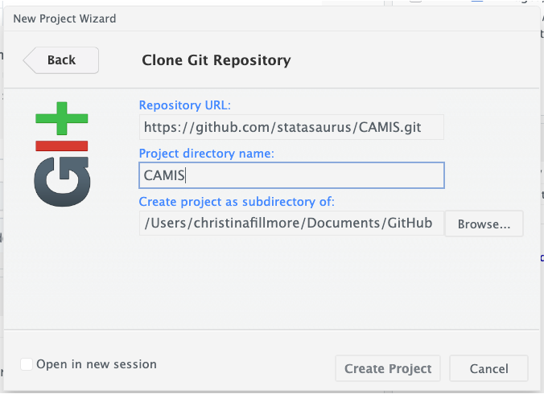

Get Started
The following instructions provides a step-by-step workflow to set up your workspace. In general, you need
- Git, GitHub
- R and Rstudio (especially if you are working on an R article)
- Quarto
- SAS, python (if you work on these topics)
Set up Git, Github, Rstudio
You will need to get git, github, and RStudio setup to talk to each other. To do this you will need to have a github account and git installed on your computer.
To connect your computer to github, we tend to recommend using a PAT because it is bit easier than SSH. We have a script that can help you set that up, found here.
For more information Jenny Bryan has a great bookdown explaining how to get setup, alternatively see the following link for a short guidance.
Fork CAMIS repository to your own
Now with RStudio all setup, you will need to fork the repository, which basically mean you want to make a copy of this repository that you own, so it will be under your github profile. This will allow you to make changes, without needing direct permission.
To do this you will need to go into github, into the CAMIS repo, and click “fork”. This will give you some options of how you want to fork the repo, honestly you can just keep the defaults and then click “Create fork”

Clone to your own computer
Once you’ve created a copy of this repository, you’ll need to clone it from GitHub to your computer. Click the “code” button to do this.
The method you’ll use, either “HTTPS” or “SSH”, depends on how you’ve connected your computer to GitHub. If you’ve set up using a PAT, select the “HTTPS” tab. If you’ve used “SSH”, then choose that tab. Either way, you will need to copy the location in the box.

Create an Rstudio project with version control
In RStudio, you will need to create a new project and select “Version Control” in the project wizard. Then you will select “Git” and finally paste the location copied from github into the URL box. Finally hit “Create Project” and you should be good to go!

Create your own branch in Rstudio
Go into RStudio and Create a branch – Give you are working from your own fork, this step it is a bit optional. It is up to you if you want to make a separate branch or not. But, it is generally considered good practice, especially if you are planning on contributing regularly. To do this from RStudio click the branch button (on the git tab top right). Within the box that comes up ensure you are on the “remote=origin” and “Sync branch with remote” is checked. You can name the branch something to do with the amends you intend to make.
Start writing
Edit and /or add files within the CAMIS directories. If you are adding SAS guidance store under sas folder, R guidance store under r folder, for “SAS vs R” comparison store under comp. Follow the naming convention of the files already stored in those folders.
Commit your changes, push to remote
Within Rstudio - Commit each change or new file added, and push to the repo from within R studio. Once you have completed the change you want to make, it is time for a pull request. Before we start though, it is good to check that your branch on github contains all the update you have done. If not you may need to push from Rstudio before moving onto the pull request.

Create a pull request
Pull request in github - Back on your fork in github you will see that your repo is now ahead of the main CAMIS repository. The first thing you want to do is make sure there aren’t any conflict that have arisen with the main repository, so you need to click ‘Sync fork’.

If that is all good then you can create a pull request by clicking on ‘Contribute’ and then ‘Open pull request’. This brings you to a page where you can explain your pull request if you like or you can just confirm you would like to go through with this pull request.
The final step is to add a reviewer, please add DrLynTaylor, statasaurus and andreaczhang. For more details about making pull requests see create a pull request.
Once your change is approved, and merged into the origin, you will be able to see your changes on CAMIS. If you have made a branch in your fork the branch will be deleted and you will need to create a new branch to add further contributions. NOTE: you can make the new branch called the same as the old one if you wish but ensure you select to overwrite the previous one.